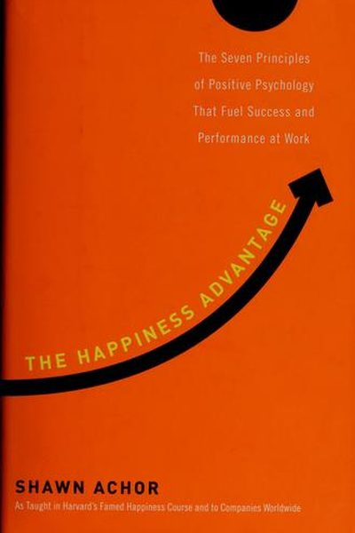

Library › Psychology & People
The Happiness Advantage — Summary & Key Lessons

The seven principles of positive psychology that fuel success and performance at work.
📖 OPEN THE FULL INTERACTIVE BREAKDOWN →🌐 Read it in Hindi, Hinglish, Gujarati, Tamil & 22 more languages — free, with audio.
💡 The Big Idea
Shawn Achor's Harvard research flips the success formula: we assume success creates happiness, but the data shows happiness creates success. A positive brain is measurably more productive, creative and resilient — the 'happiness advantage'. His seven principles — the happiness advantage, the fulcrum and lever (change your mindset, not just the situation), the tetris effect (train the brain to spot opportunity), falling up (find the upside in failure), the Zorro circle (start small to build control), the 20-second rule (lower the activation energy of good habits), and social investment (your network is your safety net) — are practical habits anyone can build.
🧠 The 7 Key Lessons
Lesson 1: The Happiness Advantage
The Happiness Advantage
The brain at positive performs better: 31% more productive, better at problem-solving, more creative and resilient. Happiness isn't a reward for success — it's the fuel for it. When you raise your happiness baseline, every metric of performance rises with it.
📖 Example: Achor's research at companies: salespeople with a positive mindset sold 37% more; doctors with a positive mood made accurate diagnoses 19% faster. Read the full example →
⚡ Do this: Do one daily 'happiness workout': write 3 things you're grateful for, journal one positive experience, exercise, and meditate for 2 minutes.
Lesson 2: The Fulcrum and the Lever
The Fulcrum and the Lever
Your mindset is the fulcrum; your power to change reality is the lever. You can't always change your circumstances, but you can change your lens — and the same reality looks completely different through a different lens. The leverage comes from choosing the interpretation that empowers you.
📖 Example: Two people get the same rejection: one sees failure, the other sees data. Same event, different fulcrum — and wildly different next actions. Read the full example →
⚡ Do this: For your current challenge, list three possible interpretations. Pick the one that empowers action — and act from it.
Lesson 3: The Tetris Effect: Train the Brain to Scan for Good
The Tetris Effect
Tetris players' brains get so trained on patterns that they see falling blocks everywhere. The same mechanism can be trained for good: a daily gratitude practice literally retrains your brain to scan the world for positives instead of threats. What you look for, you find more of.
📖 Example: Achor's gratitude exercise: writing three new gratitudes for 21 days retrains the brain to notice positives — after the period, participants naturally scanned for good without effort. Read the full example →
⚡ Do this: Start the 21-day gratitude habit: 3 new things each night. This is the Tetris effect, aimed at opportunity.
Lesson 4: Falling Up: Turn Failure Into Fuel
Falling Up
The path between failure and success runs through the 'counter-factual': what you tell yourself about the failure. Those who find the upward counterfactual ('this taught me X', 'this opened Y') gain motivation and growth; those who spiral ('I'm doomed') lose both. The event is neutral; the story you tell makes it.
📖 Example: Students who framed an exam failure as a call to study differently performed better than equally-smart students who framed it as 'I'm bad at this'. Same failure, opposite trajectories. Read the full example →
⚡ Do this: Take your last failure and write its upward counterfactual: what did it teach you, what does it now make possible?
Lesson 5: The Zorro Circle: Start Small to Gain Control
The Zorro Circle
When overwhelmed, regain control by shrinking your circle: focus only on what you can control right now, act on it, and expand from there. Small wins restore the belief that you're in control — and perceived control is a core driver of performance and wellbeing.
📖 Example: Achor's clients facing massive problems start with one tiny controllable action (clean the desk, send one email) — the win re-establishes control and the circle expands to the real problem. Read the full example →
⚡ Do this: Name the one thing you fully control right now. Do it. Then take one more step into the larger problem.
Lesson 6: The 20-Second Rule: Lower the Barrier to Good Habits
The 20-Second Rule
Willpower is finite — so design your environment to reduce activation energy for good habits and raise it for bad ones. Make the good habit 20 seconds easier to start (guitar out of the case, gym bag packed, book on the pillow) and the bad habit 20 seconds harder (TV remote in a drawer).
📖 Example: Achor moved his guitar from the closet to the middle of the room — and his practice time doubled instantly. The barrier, not the motivation, was the problem. Read the full example →
⚡ Do this: Choose one good habit and make it 20 seconds easier to start today. Choose one bad habit and make it 20 seconds harder.
Lesson 7: Social Investment: Your Network Is Your Net Worth
Social Investment
In a crisis, the people around you are your greatest resource — the brain performs better with social support, and resilient people invest in relationships before they need them. During stress, the instinct is to isolate; the science says the opposite — reach out.
📖 Example: Achor's research found that social support was the strongest predictor of happiness and resilience — and that a single supportive conversation measurably improves problem-solving performance. Read the full example →
⚡ Do this: Invest in one relationship today: a call, a genuine check-in, or help with something. Build the network before you need it.
✅ 5-Step Action Plan
- Do a daily happiness workout: gratitude + one positive journal + movement.
- Reframe your current challenge with an empowering lens.
- Run the 21-day gratitude Tetris effect.
- Find the upward story in your last failure.
- Shrink the circle: one controllable win today. Lower barriers by 20 seconds. Invest in one relationship.
⚠️ When This Doesn't Work
Achor's 'happiness first, then success' is lovely — and the Titanic was the happiest, most optimistic organisation afloat: confident crew, positive culture, 'unsinkable' branding, and the iceberg didn't care. Positivity is an amplifier, not a shield; it makes good ships faster and bad courses more cheerful. If the underlying risk is unaddressed, happiness just makes the disaster more pleasant until it arrives. The book underweights that sustainable optimism requires actually looking at the iceberg, not just reframing the deck chairs.
💀 The Graveyard Proves It
🚢 The Titanic — 'God Himself Could Not Sink This Ship'. Burn: 1,514 lives. Read the full case study →
💬 Best Quotes from The Happiness Advantage
- “Happiness is the precursor to success, not merely the result.”
- “The greatest competitive advantage in the modern economy is a positive and engaged brain.”
- “Your brain at positive is 31% more productive than your brain at negative, neutral or stressed.”
Interactive version: mark lessons as read, listen in your language, share quote cards.